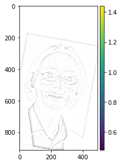

Gradients
Finite Difference Operator
Calculating gradients can be extremely insightful in inference. In the context of images, it is hard to directly calculate the gradient of a picture, since a picture is discretized. Therefore, a way to calculate the gradient of an image is through finite difference operators. Convolving an image with a finite difference operator filter (in either the x or y direction) will result into a matrix that shows the differences between pixels. The kernel used for finite difference operators are [1,-1] for in the x direction and [1,-1]T in the y direction. The results are shown below on the cameraman.jpg.

Derivative of Gaussian Filter
As expected, due to the smoothing of the noise the noise is less spiky. Therefore, the high values in our gradient images can be more attributed to the actual edges of our image. It is worth noting that the order of convolution does not matter. The results that we get from seperately convolving the image with the gaussian kernel (sigma=3, kernel half_width =20) and then the DoF filter do not differ than if we convolve the image with a filter of the two convolved filters. This can be attributed to the associativity of convolutions.
Magnitude of Gradients
The magnitude of gradients can be calculated using: $$||\nabla{f}||= \sqrt{(\dfrac{df}{dx})^{2} + (\dfrac{df}{dy})^{2}}$$Image Straightening
Another extremely useful application of gradients are calculating gradient angles. A way, for example, to straighten images, is to iteratively rotate over a set sequence of angles. For each angle, you can take a look at the number of points have an angle of 90 degrees. The iteration with the most numbers can be classified as the straight picture.| Original | Original Distribution of Angles | Straightened | Distribution of Angles after Straightening |
|---|---|---|---|
 |
 |
 |
|
 |
|||
 |
|||
Frequencies
The aforementioned applications are extremely useful in sharpening images, hybridizing them and even merging them at different levels. Gaussian Kernels allow interaction and control over the certain frequencies in images. Fourier Analysis also allows for this level of frequencies. The advantage of using gaussian kernels to accomplish this is that it is efficient to implement.'Sharpening'
One way to make images appear to be sharper is to filter out the high frequencies of an image and add those back to the original image. The reason why we cannot really consider it sharpening will be discussed after seeing our failure case. For the pictures below, I convolved the image with a Gaussian Kernel (sigma=3, half_width = 20px) and then subtracted the convoled image from the original picture to extract the high frequencies. After this, addition of the high frequencies scaled by a scalar to the original picture results into the following pictures.
Notice the edges of the Taj Mahal as well as the contours of the trees.

We see that the flags definitely and the stair cases have more contours. The colors also seem less vibrant.
One case where we see that this is actually is not sharpening is the sequence below. As you notice, the original picture is already sharp. The second image is convolved with a Gaussian kernel and appears blurred. If we sharpen this blurred image, we notice that we do not get back our original pictures. This is because the high frequencies have been lost during blurring. What we are adding back is the highest frequency and amplify that effect to make it look sharper. In reality, this does not add back any type of resolution.
Hybridized
Illusion tricks are fun! A way to create hybridized images is to take the high frequencies from one image (subtracting convolved gaussian blurred image from original) and combine that with the other picture's lower frequencies. This results into the following iconic pictures that from far away appear different from closer up due to the resolution that our eye observes. Important in this process is that the correct sigma for the gaussian kernel is picked as well as that alignment occurs correctly.Other Examples
What we see is that the last picture is a failure case. The reason why the blend did not work well is because when you choose the picture without many high frequency features to be the high frequency mask, you almost get the same result as blurring the other picture since there is nothing to be projected onto it.
Fourier Analysis
Let's analyze what happens when we hybridize together two pictures. Specifically, let's look at the formation of Anish Rao. We see that their original pictures contain both high as low frequency items since the fourier domain image contains lines that span the whole picture. When we take the low frequency picture, we see that it is highly concentrated line in the middle. The high frequency picture however has a lot of density far away from the center. When we combine these two, you get a combined domain of low and high which makes sense since we add the results to each other.| $$R^{2}$$ | $$Fourier \space Domain$$ |
|---|---|
|  | |
Mutli Resolution Blending
Multi Resolution Blending uses the laPlacian stacks to blend together images from different levels using a mask. The result is that we do not have a clear seam but rather smooth seems.


Irregular Mask